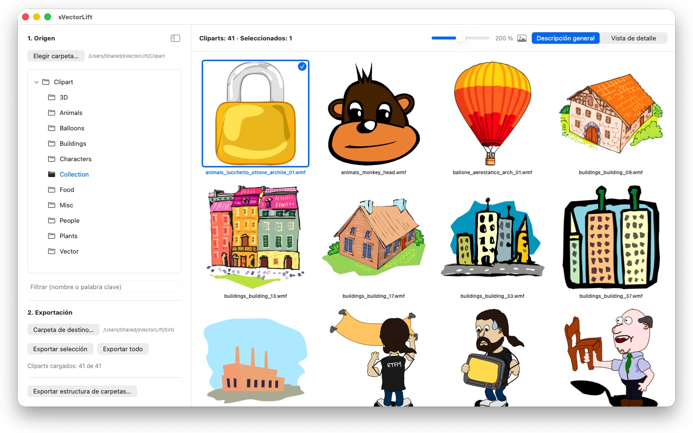
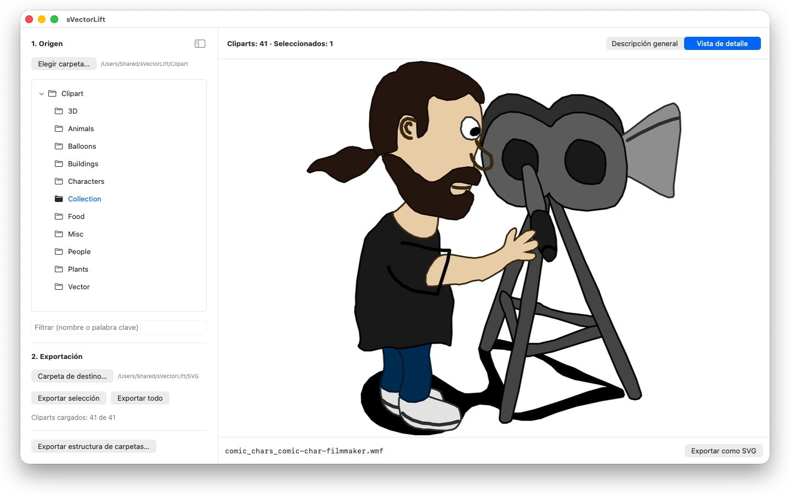

Miles de imágenes de clipart en aquellos CD de CorelDRAW, atrapadas en formatos muertos. sVectorLift las convierte en ilustraciones que hoy puedes usar de verdad.
 Ver el vídeo – 3 minutos en YouTube, en inglés con subtítulos en español
Ver el vídeo – 3 minutos en YouTube, en inglés con subtítulos en español Vistazo rápido – poco más de un minuto en YouTube, en inglés con subtítulos en español
Vistazo rápido – poco más de un minuto en YouTube, en inglés con subtítulos en español

En alguna estantería duerme un CD lleno de clipart que compraste hace años. Los archivos siguen ahí, intactos. Pero no hay nada en tu Mac que los abra.
24 idiomas: Deutsch · English · Español · Français · Italiano · Nederlands · Português · Svenska · Norsk · Suomi · Polski · Čeština · Hrvatski · Magyar · Română · Türkçe · Русский · Українська · فارسی · ไทย · 日本語 · 한국어 · 简体中文 · 繁體中文
sVectorLift vuelve a poner ese material a trabajar. Reconstruye cada dibujo como un SVG de verdad: nítido a cualquier tamaño, editable y listo para llevarlo directamente a Illustrator, Affinity, Inkscape, Sketch, Figma o a tu web. No solo vuelven a verse: vuelven a servir. De ahí el «Lift» del nombre: dibujos vectoriales antiguos, elevados al nivel de las herramientas de hoy.
QUÉ ABRE
- Documentos de CorelDRAW (.cdr), versiones 6 a 9
- Corel Binary Meta File (.cmx), incluida la vieja variante CDRX que otras herramientas se niegan a leer
- Windows Metafile (.wmf)
- Computer Graphics Metafile (.cgm)
- QuickDraw 3D Metafiles (.3dm, .3dmf), renderizados como imagen
- Scalable Vector Graphics (.svg), mostrados directamente
Muchos archivos con extensión .cdr no son documentos de CorelDRAW, sino CMX: justo por eso fallan los conversores habituales. sVectorLift lee los dos.
sVectorLift está pensado para bibliotecas de clipart: dibujos, símbolos, ilustraciones. No es una herramienta de maquetación ni pretende reproducir folletos de varias páginas ni plantillas de imprenta.
UNA CONVERSIÓN VECTORIAL DE VERDAD
Esto no es una captura de la miniatura de vista previa. sVectorLift interpreta el dibujo real: trazados y curvas Bézier, colores de relleno, degradados, contornos y líneas discontinuas, rellenos de patrón y textura, fotos incrustadas y objetos de texto. Lo que sale son datos vectoriales auténticos, que puedes escalar, recolorear y editar. No una foto de un dibujo.
Las imágenes puramente rasterizadas se exportan como PNG, así no se pierde nada.
¿Necesitas una imagen en lugar de un gráfico vectorial? «Exportar como PNG» y «Exportar como JPG» convierten cualquier dibujo en imagen, también los archivos SVG, con el tamaño que definas en Ajustes.
EXPLORA TU BIBLIOTECA
- Árbol de carpetas para toda la colección, con subcarpetas
- Cuadrícula de miniaturas vectoriales nítidas, con control deslizante de tamaño
- Vista de detalle con navegación por las flechas del teclado
- Filtro por nombre o palabra clave
- Selección múltiple como en Fotos: clic, ⌘-clic, ⇧-clic, marco de selección, ⌘A
- Abre un archivo directamente desde el Finder («Abrir con» o doble clic)
- Carpetas recientes que recuerdan dónde lo dejaste: subcarpeta y archivo seleccionado
- Exporta una selección o una carpeta entera de una sola vez
- Convierte estructuras de carpetas enteras, con sus subcarpetas, de una sola vez: la estructura se conserva en la carpeta de destino
- Cambia el nombre, muestra en el Finder o mueve a la papelera
RÁPIDO Y CUIDADOSO CON TU MAC
Las miniaturas solo se generan para lo que estás viendo, en segundo plano, y se guardan en caché. Las carpetas grandes se abren al instante en lugar de bloquearse mientras se procesan miles de archivos.
Todo se queda en tu Mac. Sin conexiones de red, sin cuentas, sin recopilación de datos.
CorelDRAW es una marca de Corel Corporation. sVectorLift es una app independiente y no está afiliada a Corel ni respaldada por Corel.
- Requiere macOS 14 o posterior
- 24 idiomas
- Soporte: SwiftAppsBavaria@gmx.net
Más apps
sCollect
Organizar música, películas, audiolibros, libros electrónicos y otras colecciones en una biblioteca multimedia.
sCollectPlay
El reproductor para la biblioteca multimedia: reproducir música, películas, audiolibros y pódcasts simplemente desde una carpeta, un XML de iTunes o una biblioteca de sCollect.
sCollectPlay Lite
La edición ligera de sCollectPlay: simplemente abrir una carpeta, un XML de iTunes o una biblioteca de sCollect y reproducir desde ahí música, películas, audiolibros y pódcasts, con listas de reproducción, pistas de audio y de subtítulos, cámara lenta y avance fotograma a fotograma. Solo hay una fuente abierta a la vez. El navegador de columnas, las listas de reproducción propias y la lista de fuentes usadas recientemente solo están disponibles en la versión completa.
sName2Date
Escribir la fecha del nombre de archivo como fecha de captura en fotos, vídeos y grabaciones de audio, para que un archivo como IMG_20240115_103000.jpg se ordene correctamente en cualquier gestor de fotos.
sName2Date Lite
La edición para un archivo por pasada: escribir la fecha del nombre de archivo como fecha de captura en una foto, un vídeo o una grabación de audio, ajustarla a mano, pasar el nombre a la notación ISO y deshacerlo todo con ⌘Z; las mismas capacidades que sName2Date, solo que sin carpetas enteras.
SwiftRename
De la tarjeta de memoria al archivo: nombrar fotos y vídeos según la hora de captura, ordenarlos por año, mes o día y detectar duplicados, también en RAW.
sBikeBridge
Analizar salidas en bicicleta sin subirlas a un portal: importar archivos FIT de cualquier ciclocomputador que grabe en este formato, además de GPX y TCX. Las salidas se guardan en una biblioteca propia en el Mac, con mapa, potencia y frecuencia cardiaca, fotos y notas; la importación detecta los duplicados. Las estadísticas por año o por mes y los filtros por distancia, desnivel y duración permiten comparar las salidas. Si se desea, el mapa también está disponible sin conexión.